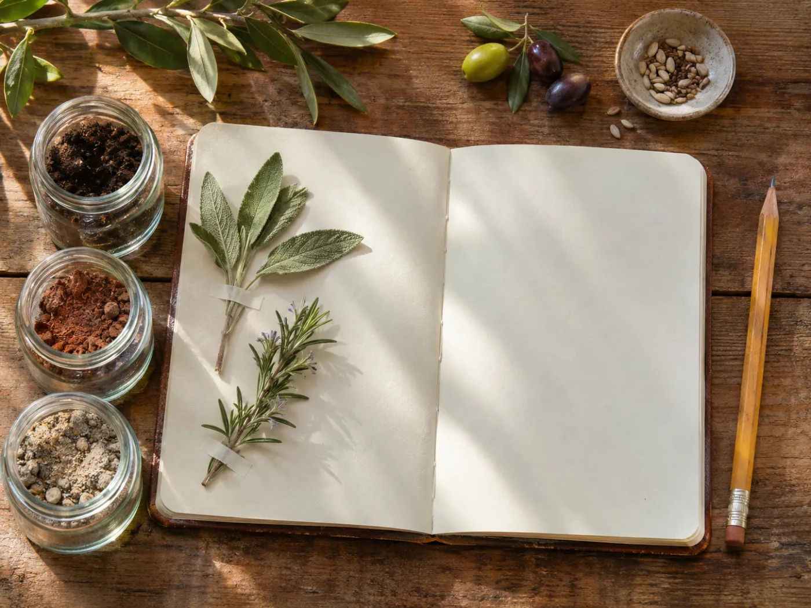

Adı: Âheste
Yavaş, telaşsız. Ağaçlar on yılda, toprak yirmi yılda kurulur. Biz de o hızda büyüyeceğiz.
Âheste, kurmak istediğimiz permakültür çiftliğinin adı. Toprağı sürmeyen, suyu tutan, zeytin ağaçlarının altında biberiye ve kekik yetiştiren, küçük bir kafesi ve dükkânı olan bir yer hayal ediyoruz. Bu defterde nerede, nasıl ve neyle başlayacağımızı herkesin gözü önünde düşünüyoruz.
fikriniz varsa yazın, defter herkese açık

Her not bir soruyla başlıyor ve bir eğilimle bitiyor. Kesinleşen kararlar burada birikecek.
Her sayfa bir konuyu farklı seçenekleriyle, artı ve eksileriyle tartıyor.
Nerede ve nasıl olursa olsun, bu üç etik her kararın altında duracak.
Sürüm yok, çıplak toprak yok, sentetik gübre ve ilaç yok. Toprağı her yıl biraz daha zengin bırakmak.
Bizi, komşuları, gönüllüleri ve ziyaretçileri yormayan, besleyen bir yer. Aşırı büyümeden.
Fazlası tohum, ürün ve bilgi olarak geri dönecek. Bu defterin herkese açık olması da bunun parçası.
Yavaş, telaşsız. Ağaçlar on yılda, toprak yirmi yılda kurulur. Biz de o hızda büyüyeceğiz.
Önce bir yıl gözlem, sonra tasarım. Su ve toprak bitkilerden önce gelir.
Hepsi Marmara ve Kuzey Ege'de, zeytin yetişebilen ve büyük şehirlere ulaşılabilir yerler.
Beş not açıldı: konum, bahçe, ağaçlar, kafe, dükkân.
Ölçütlerin ağırlıklarını kendiniz değiştirip sonucu görebilirsiniz.
Zeytin çeşitleri, meyve ağaçları ve azot bağlayıcılar, bölgeye göre filtrelenebilir.